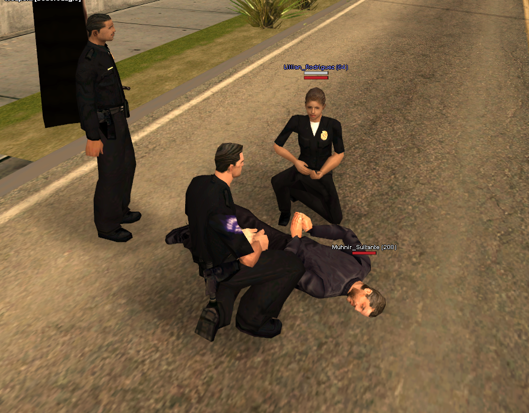

Здесь вы можете ознакомиться с оновной информацией о департаменте полиции Лос Сантоса
Департамент полиции Лос-Сантоса (англ. Los Santos Police Department, сокр. LSPD) — департамент полиции города Лос-Сантосе, являющийся местным правоохранительным органом, входящим в состав Департамента полиции Сан-Андреаса. Штаб-квартира департамента находится в районе Першинг-Сквер.
Штаб-квартира LSPD. Першинг-Сквер.
Сотрудники департамента круглосуточно несут дежурство для сохранения порядка на улицах города.
Задержание подозреваемого

Арест беглого преступника

Задержание банды грабителей